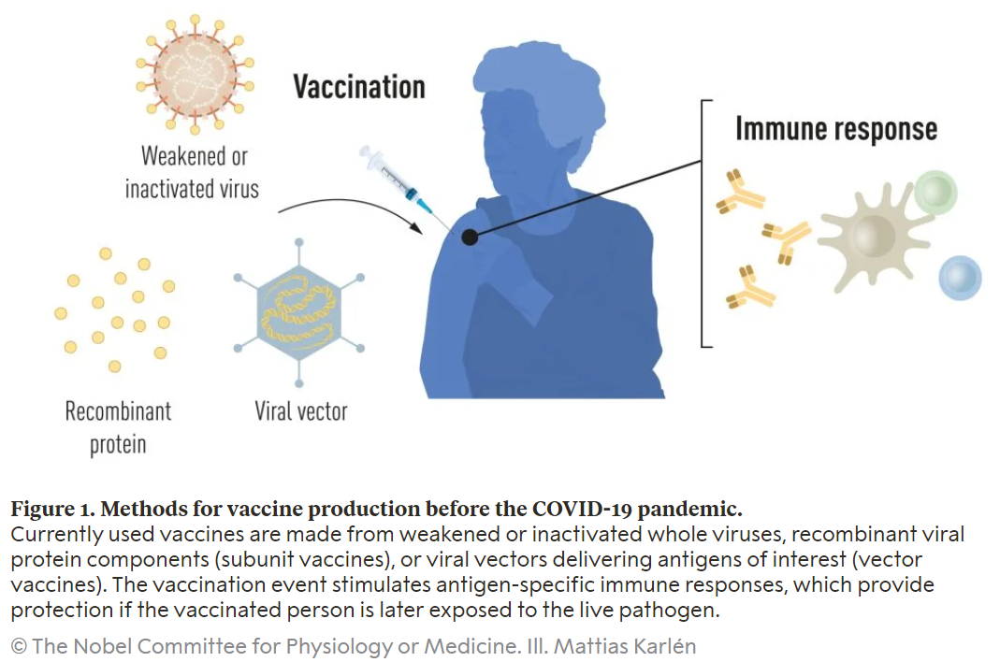
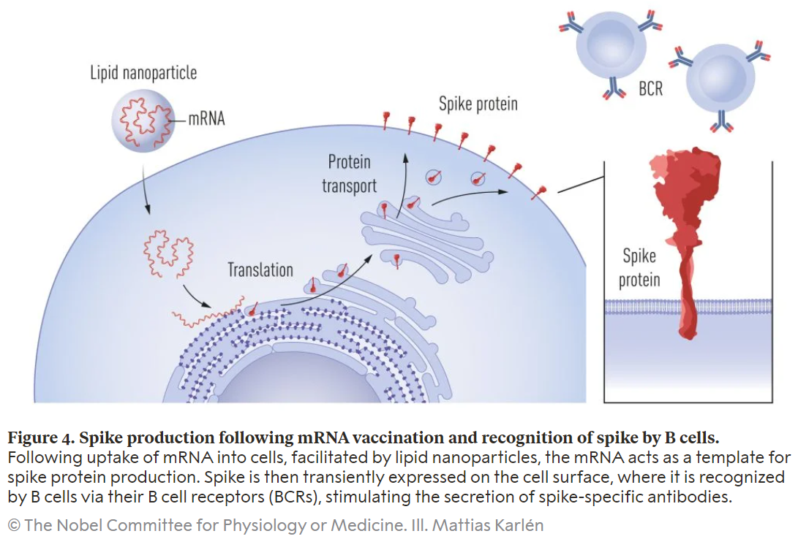

狙い
ノーベル賞は、人類の進歩と発展に寄与した個人や団体に贈られる世界的に権威のある賞です。この賞は、1895年にスウェーデンの化学者・発明家アルフレッド・ノーベルの遺言に基づき設立されました。ノーベルはダイナマイトの発明者として知られており、自らの遺産を使って、物理学、化学、医学、経済学、平和、文学の6つのカテゴリーで優れた業績を上げた人々に毎年賞金とメダルを贈ることを決めました。ノーベル賞は、世界の最も優れた研究者や活動家、作家などを称える場として、多くの人々から注目されています。受賞者は「ノーベル賞受賞者」として歴史に名を刻むことになり、その業績は多くの人々に知られることとなります。
論文タイトル一覧
ノーベル生理学・医学賞
【総評】2023年のノーベル生理学・医学賞は、mRNAワクチンの開発に貢献したカタリン・カリコとドリュー・ワイスマンに授与されました。彼らは、mRNAの塩基修飾が免疫系との相互作用に重要な役割を果たすことを発見し、mRNAを治療法として利用するための基礎を築きました。彼らの研究は、COVID-19パンデミックに対応する高効率なワクチンの開発を可能にしました。
【受賞者と所属先】カタリン・カリコは、ハンガリー出身の生化学者で、ドイツのバイオテクノロジー企業BioNTechの上級副社長を務めています。また、ペンシルバニア大学医学部の客員教授でもあります。カリコは、RNAの生物学的特性や応用に関する研究を長年行ってきました。特に、mRNA（メッセンジャーRNA）を改変して免疫系の認識を回避し、タンパク質の産生を向上させる方法を発見しました。この発見は、mRNAワクチンの開発に不可欠なものでした。ドリュー・ワイスマンは、医師で免疫学者で、ペンシルバニア大学医学部の教授です。ウイスマンは、HIV（ヒト免疫不全ウイルス）や他の感染症に対するワクチン開発に関心を持っており、カリコと共同でmRNA技術を改良しました。ウイスマンは、mRNAが細胞内でどのように認識されるかや、どのようなシグナル伝達経路が活性化されるかを明らかにしました。また、mRNAを標的細胞に効率的に送達するための脂質ナノ粒子（LNP）というシステムも開発しました。
【受賞者と所属先】カタリン・カリコは、ハンガリー出身の生化学者で、ドイツのバイオテクノロジー企業BioNTechの上級副社長を務めています。また、ペンシルバニア大学医学部の客員教授でもあります。カリコは、RNAの生物学的特性や応用に関する研究を長年行ってきました。特に、mRNA（メッセンジャーRNA）を改変して免疫系の認識を回避し、タンパク質の産生を向上させる方法を発見しました。この発見は、mRNAワクチンの開発に不可欠なものでした。ドリュー・ワイスマンは、医師で免疫学者で、ペンシルバニア大学医学部の教授です。ウイスマンは、HIV（ヒト免疫不全ウイルス）や他の感染症に対するワクチン開発に関心を持っており、カリコと共同でmRNA技術を改良しました。ウイスマンは、mRNAが細胞内でどのように認識されるかや、どのようなシグナル伝達経路が活性化されるかを明らかにしました。また、mRNAを標的細胞に効率的に送達するための脂質ナノ粒子（LNP）というシステムも開発しました。


【受賞理由】カリコとワイスマンは、in vitroで合成されたmRNAが免疫系に認識されて炎症反応を引き起こすことを発見しました。彼らは、これがmRNA中のウリジン塩基がトール様受容体3（TLR3）、7（TLR7）および8（TLR8）に結合することによるものであることを突き止めました。彼らは、ウリジン塩基を修飾された塩基（例えば擬ウリジンやN1-メチル擬ウリジン）に置き換えることで、TLRへの結合を阻害し、炎症反応を抑制することができることを示しました。さらに、修飾された塩基を含むmRNAは、タンパク質合成に必要な因子や酵素とより効率的に相互作用し、細胞内でのタンパク質産生量を増やすことができることも明らかにしました。
【学術的貢献】カリコとワイスマンの発見は、mRNA技術の発展における画期的なものでした。彼らは、in vitroで合成されたmRNAが自然界に存在しない特徴を持ち、それが免疫系によって異物として認識されることを明らかにしました。彼らはまた、その問題を解決するための方法論を提案し、実証しました。彼らは、自然界に存在するRNAに見られる修飾された塩基を用いることで、mRNAの安定性や翻訳効率を向上させるとともに、免疫系による不要な反応を回避することができることを示しました。彼らの発見は、mRNAワクチンのプラットフォームを臨床的に有用なものにするための重要な一歩でした。
【社会的インパクト】 カリコとワイスマンの発見は、COVID-19パンデミックに対応するためのmRNAワクチンの開発に不可欠でした。mRNAワクチンは、従来のワクチンよりも迅速かつ柔軟に作製することができます。また、高い安全性と有効性を示しました。mRNAワクチンは、世界中の人々の命を救い、感染症の拡大を抑えるために大きな役割を果たしました。また、mRNA技術は、他の感染症やがんなどの治療にも応用される可能性があります。カリコとワイスマンの発見は、医学における革新的な貢献であり、人類にとっての偉大な恩恵です。
【用語解説】mRNA（メッセンジャーRNA）：DNAから転写された情報を運ぶ分子で、細胞内でタンパク質を合成するためのテンプレートとして機能します。in vitro：試験管や培養皿などの人工的な環境で行われる実験や操作を指します。修飾された塩基：RNA中の通常の塩基（アデニン、ウリジン、グアニン、シトシン）に化学的な変化を加えたもので、RNAの構造や機能に影響を与えます。TLR（トール様受容体）：細胞表面や細胞内に存在する受容体で、細菌やウイルスなどの病原体由来の分子パターンを認識して免疫反応を引き起こします。炎症反応：免疫系が組織への損傷や感染に対して起こす防御的な反応で、発赤、腫脹、熱感、痛みなどの現象を伴います。ワクチン：感染症から身体を守るために用いられる医薬品で、弱めた或いは不活化した病原体やその一部分子を注射することで、特異的な免疫応答を誘発し、記憶細胞を作ります。
【学術的貢献】カリコとワイスマンの発見は、mRNA技術の発展における画期的なものでした。彼らは、in vitroで合成されたmRNAが自然界に存在しない特徴を持ち、それが免疫系によって異物として認識されることを明らかにしました。彼らはまた、その問題を解決するための方法論を提案し、実証しました。彼らは、自然界に存在するRNAに見られる修飾された塩基を用いることで、mRNAの安定性や翻訳効率を向上させるとともに、免疫系による不要な反応を回避することができることを示しました。彼らの発見は、mRNAワクチンのプラットフォームを臨床的に有用なものにするための重要な一歩でした。
【社会的インパクト】 カリコとワイスマンの発見は、COVID-19パンデミックに対応するためのmRNAワクチンの開発に不可欠でした。mRNAワクチンは、従来のワクチンよりも迅速かつ柔軟に作製することができます。また、高い安全性と有効性を示しました。mRNAワクチンは、世界中の人々の命を救い、感染症の拡大を抑えるために大きな役割を果たしました。また、mRNA技術は、他の感染症やがんなどの治療にも応用される可能性があります。カリコとワイスマンの発見は、医学における革新的な貢献であり、人類にとっての偉大な恩恵です。
【用語解説】mRNA（メッセンジャーRNA）：DNAから転写された情報を運ぶ分子で、細胞内でタンパク質を合成するためのテンプレートとして機能します。in vitro：試験管や培養皿などの人工的な環境で行われる実験や操作を指します。修飾された塩基：RNA中の通常の塩基（アデニン、ウリジン、グアニン、シトシン）に化学的な変化を加えたもので、RNAの構造や機能に影響を与えます。TLR（トール様受容体）：細胞表面や細胞内に存在する受容体で、細菌やウイルスなどの病原体由来の分子パターンを認識して免疫反応を引き起こします。炎症反応：免疫系が組織への損傷や感染に対して起こす防御的な反応で、発赤、腫脹、熱感、痛みなどの現象を伴います。ワクチン：感染症から身体を守るために用いられる医薬品で、弱めた或いは不活化した病原体やその一部分子を注射することで、特異的な免疫応答を誘発し、記憶細胞を作ります。